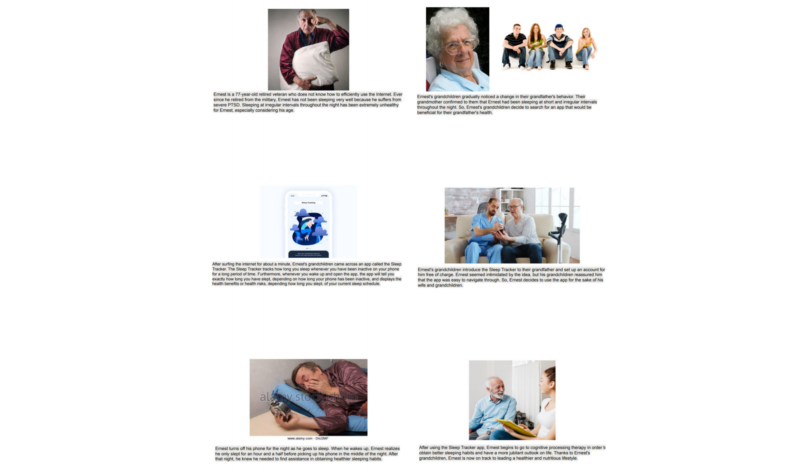
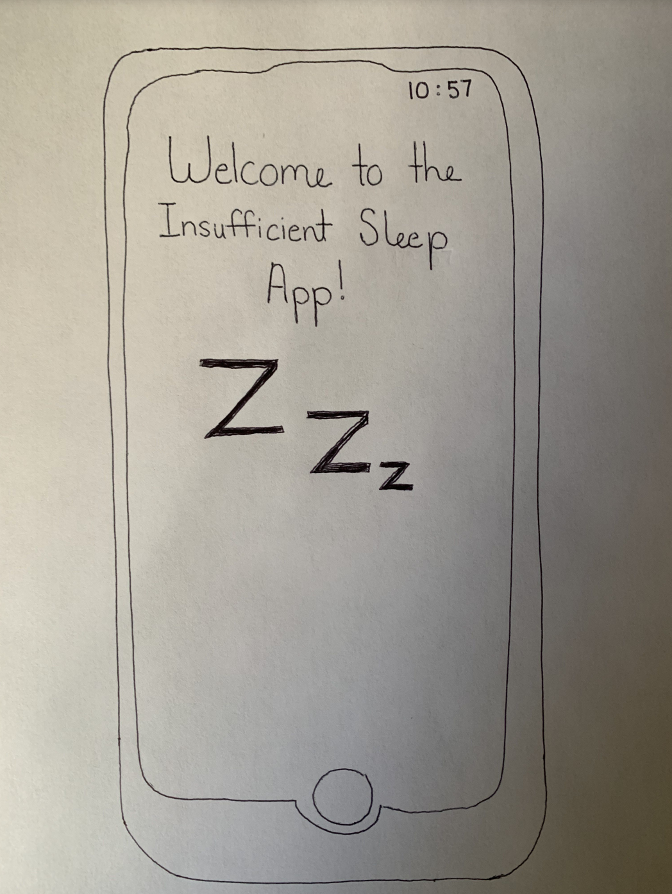
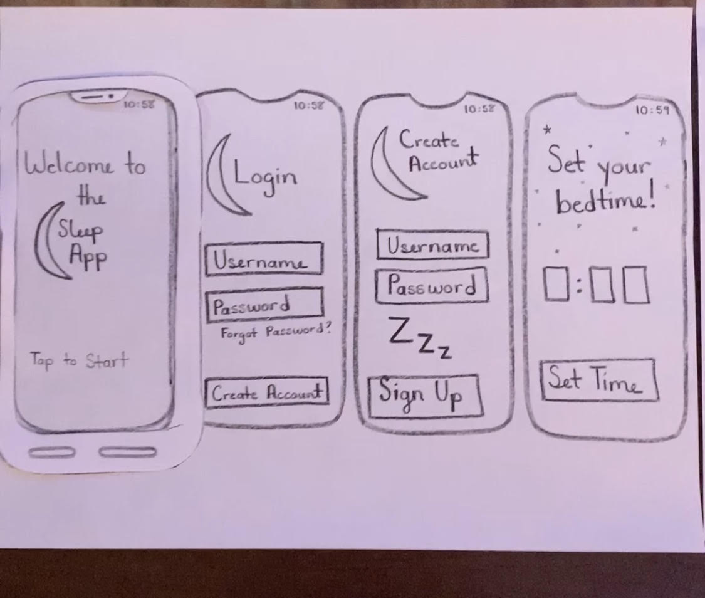

Problem Statement: Insufficient Sleep

Despite the many advancements in sleep aids, there is still an epidemic of sleep deprivation across the world. Many are not aware they aren't sleeping well, only feeling the negative effects of sleep deprivation, while others suffer and worry about their own insomnia.
Affinity Diagram: Insufficient Sleep

My group members and I conjured up various ideas relating to insufficient sleep.
Persona: Five Personas for Insufficient Sleep App

Five personas of typical insufficient sleep app users.
Storyboard: Five Storyboards for Insufficient Sleep App
Five storyboards of typical insufficient sleep app users.
Sketches
Rough ideas of how the application may look.
Paper Prototype
A paper walkthrough of the potential look of every screen in the application.